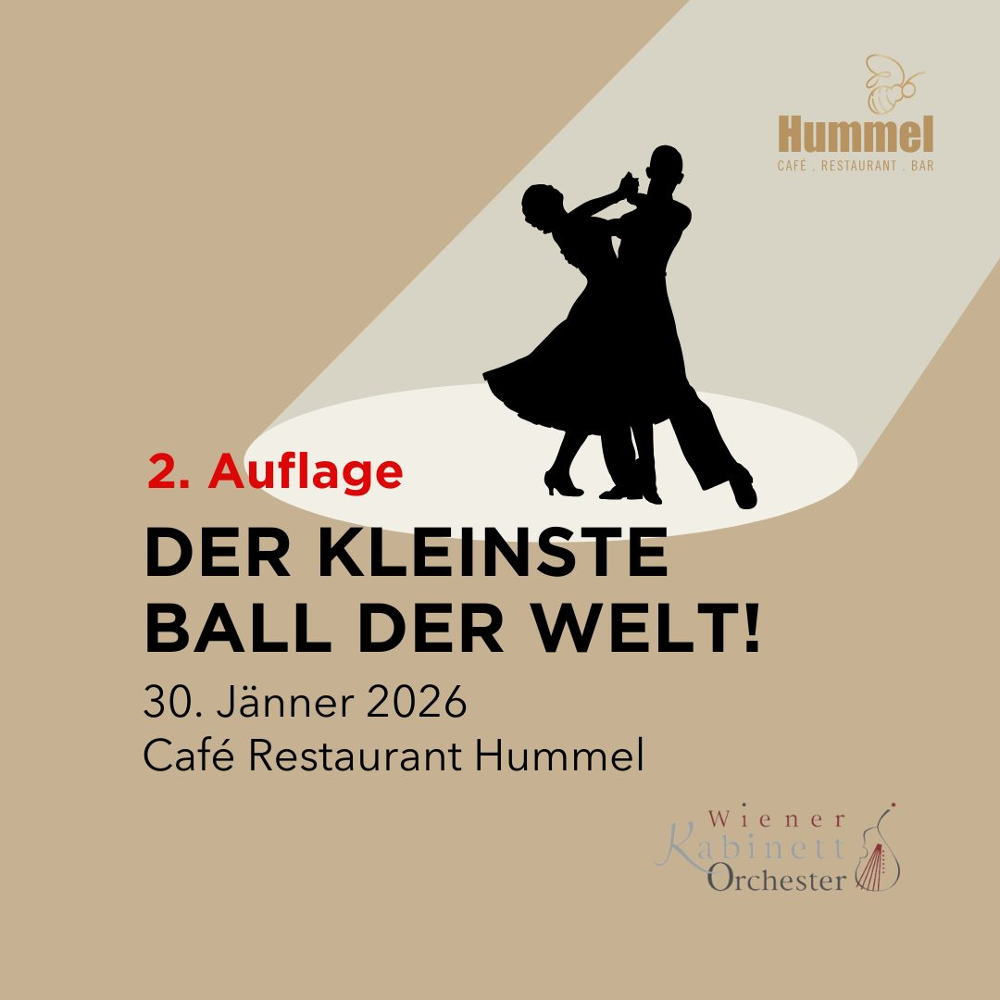
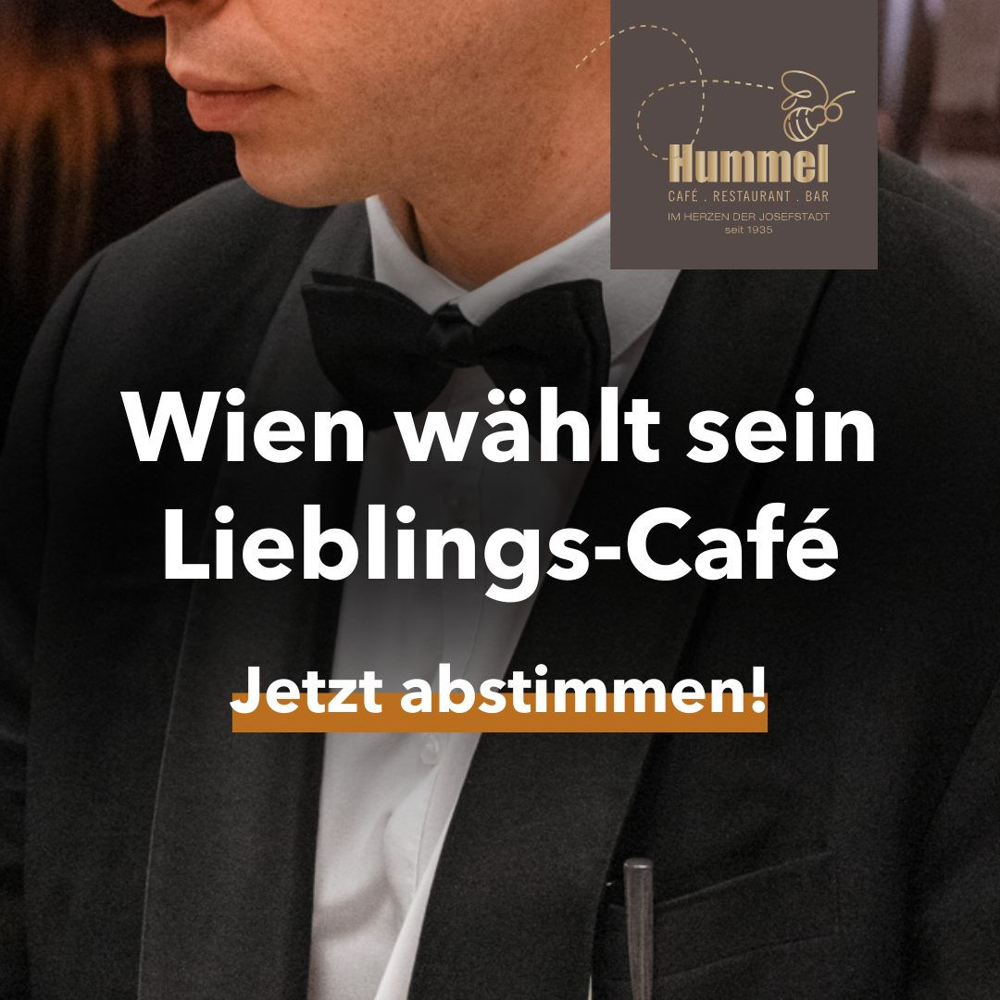
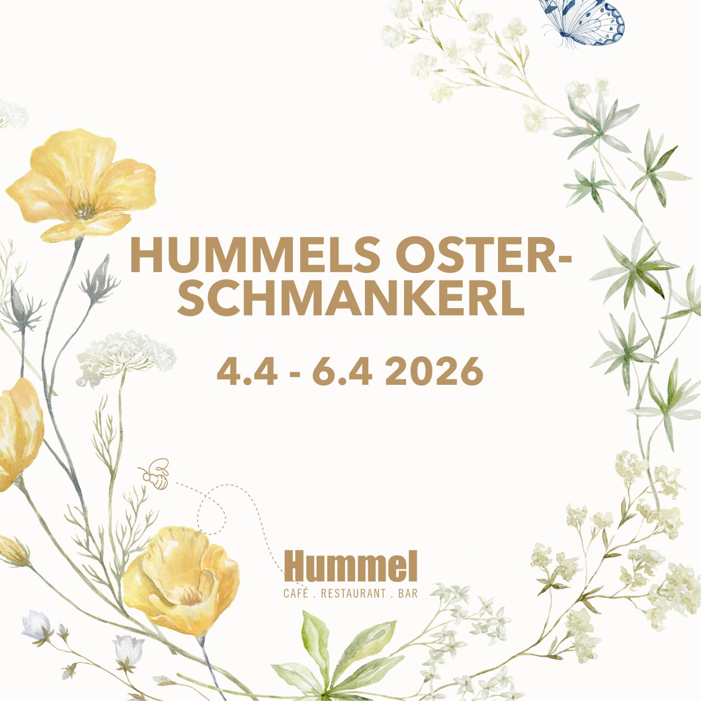

Start › Aktuelles
Topaktuell
Alles rund ums Hummel
Aktionen, Saisonen, Feste und Neuigkeiten – von der Schnitzelwoche bis zum kleinsten Ball der Welt.



30. Jänner 2026
Der kleinste Ball der Welt
Am 30. Jänner 2026 verwandelt sich das Café Hummel erneut in einen außergewöhnlichen Ballsaal: die zweite Auflage des „Kleinsten Balls der Welt“ – ein Ballereignis, das die Atmosphäre des Hauses mit klassischer Wiener Balltradition verbindet.
Der Abend beginnt mit dem Einlass um 18:00 Uhr, die feierliche Eröffnung folgt um 19:00 Uhr. Es spielt das Wiener Kabinett Orchester, dazu Live-Performances von Carole Alston mit Band. Bis zum Ballende um 01:30 Uhr erwartet Sie ein Programm, das in jedem Raum Ballatmosphäre schafft: Tombola, Fotowall, Taxitänzer und eine Liveübertragung der Tanzfläche in alle Räume.
Dresscode: Abendkleidung. Küss die Hand, G'schamster Diener – das Team vom Café Hummel.
Tickets & Reservierung
- Ballkartepro Person€ 45,–
- Sitzplatzkartepro Person, gilt als Konsumationsgutschrift€ 30,–
Reservierung telefonisch unter 01 / 40 55 314 oder per E-Mail an event@cafehummel.at.
Archiv
Im Archiv stöbern
Alle Meldungen der bestehenden Website – geordnet und aufklappbar statt als endlose Kachelwand.
Kleinster Ball der Welt 20268. Dezember 2025
Zweite Auflage am 30. Jänner 2026: Einlass 18 Uhr, Eröffnung 19 Uhr, Ballende 01:30 Uhr. Wiener Kabinett Orchester und Carole Alston mit Band, Tombola, Fotowall, Taxitänzer, Liveübertragung der Tanzfläche in alle Räume. Ballkarte € 45,– pro Person, Sitzplatzkarte € 30,– pro Person (gilt als Konsumationsgutschrift). Dresscode: Abendkleidung.
Oster-Schmankerl6. März 2026
Osterschinken mit Erdäpfelpüree, rotem Rübensalat und steirischem Kren, Lammrahm-Gulasch mit Bärlauchnockerln, Erdbeer-Tiramisu auf Eierlikör-Creme sowie der Osterschmaus-Brunchteller. Auch zum Mitnehmen.
Wahl zum Lieblings-Café9. September 2025
Wien wählt sein Lieblings-Café: Abstimmung des Wiener Bezirksblatts, möglich bis 12. Dezember 2025.
90 Jahre Café Hummel28. Mai 2025
Was für ein Fest. Alle Fotos der Feier unter dem Link zu den Event-Fotos. Copyright der Aufnahmen: © Katharina Schiffl, kommerzielle Nutzung nur auf Anfrage.
Öffnungszeiten Jahreswechsel31. Dezember 2024
Am 31. Dezember von 10 bis 22 Uhr geöffnet, Küchenschluss 21:30 Uhr. Am 1. Jänner ab 10 Uhr geöffnet, ab 11 Uhr Übertragung des Neujahrskonzerts der Wiener Philharmoniker, Schluss um 22 Uhr, Küchenschluss 21:30 Uhr.
Schnitzelwochen im HummelAktion
Wiener Schmankerl und Traditionsküche: Fledermausschnitzel € 19,50, Mailänder Cordon Bleu € 22,50, warme Himbeer-Mohn-Krapfen € 6,80, dazu Birra Moretti vom Fass.
SpargelwochenSaison
Himmlische Spargelzeit mit Bio-Spargel aus dem Marchfeld.
Steirer WochenSaison
Es wird steirisch im Hummel.
Herings-Schmaus im HummelSaison
Das wird ein Schmaus.
Wiener FesttagsplatteSaison
Die Festtagsplatte für die Feiertage.
Swing und GanslSaison
Gansl-Saison mit Livemusik im Haus.
Jazz und Swing im Hummel8. Februar, ab 20 Uhr
Jazz und Swing im Kaffeehaus.
Muttertag im HummelAnlass
Muttertag im Hummel.
Dry JanuaryJänner
Dry January im Hummel.
Café Hummel ist das beliebteste Kaffeehaus WiensAuszeichnung
Wir wurden zum beliebtesten Kaffeehaus Wiens gewählt.
Reportage: 85 Jahre Café HummelRückblick
Die Reportage zum 85-Jahr-Jubiläum.
Meetingraum buchenService
Buchen Sie unsere Bibliothek für Ihre Meetings, Feiern und Pressekonferenzen.
Unsere Hummel-App ist daDigital
QR-Code scannen, Hummel-App laden – und schon sind Sie dabei.
Wir sind bei MJAMDigital
Ab sofort kann über MJAM auch eine Auswahl unseres Frühstücks bestellt werden – bequem direkt nach Hause.
Apple Pay im Café HummelDigital
Bezahlen wie nie zuvor: Debitkarte oder Kreditkarte der Ersten Bank mit Apple Pay.
Onlinegutscheine zum DownloadService
Gutscheine online zum Download.
Hummels FrühstückspassService
Bei jedem Frühstück ein Stempel; bei Abgabe des Passes mit zehn Stempeln lädt Sie das Haus als Dankeschön ein.
Mit ohne GlutenKüche
Jetzt neu: das glutenfreie Wiener Schnitzel. Unseren Klassiker gibt es auch ganz ohne Getreide.
Thum Schinken im HummelLieferanten
Thum Schinken im Hummel – Tradition seit 1860.
Genuss Region ÖsterreichAuszeichnung
Das Café Hummel darf sich das 1. Genuss-Café Wiens nennen. Regionalität, Saisonalität und österreichische Gastfreundschaft stehen im Leitbild an erster Stelle.
Koch, Köchin und Küchenhilfe gesuchtKarriere
Das Küchenteam sucht Verstärkung. Bewerbungen jederzeit über das Formular auf der Seite Über uns.